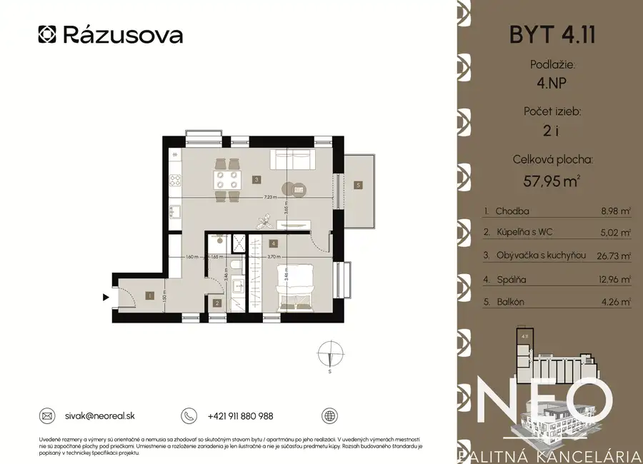
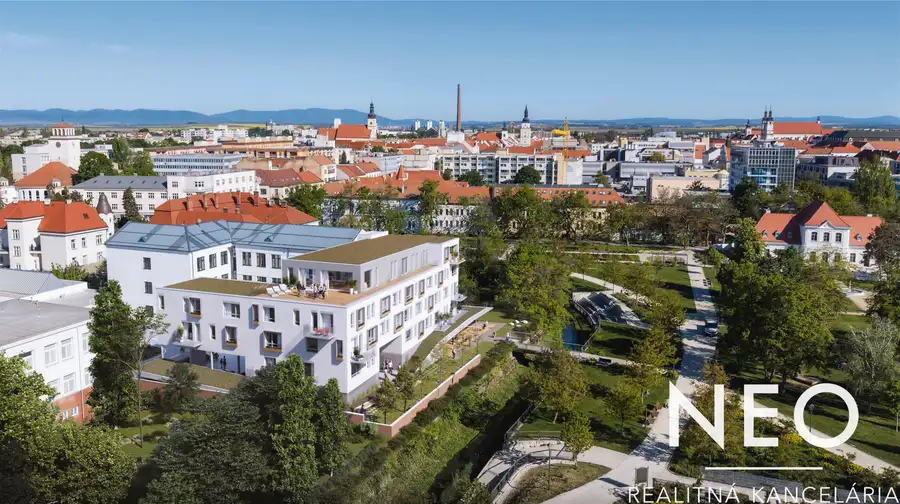
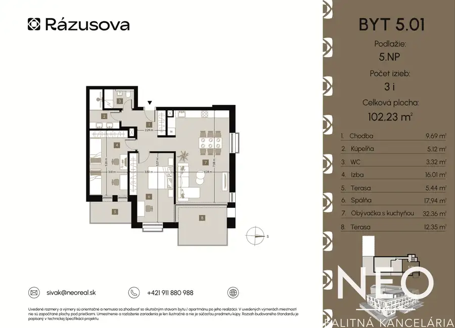
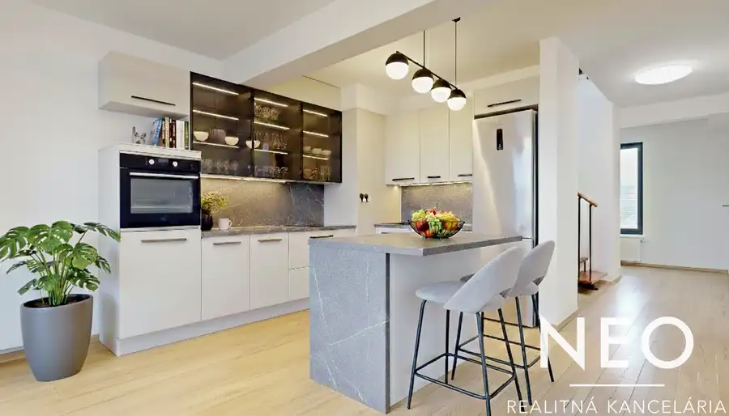
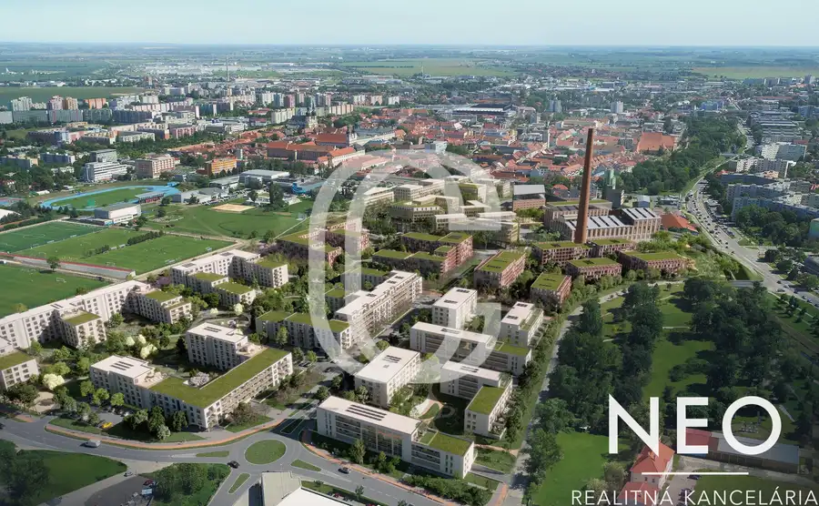
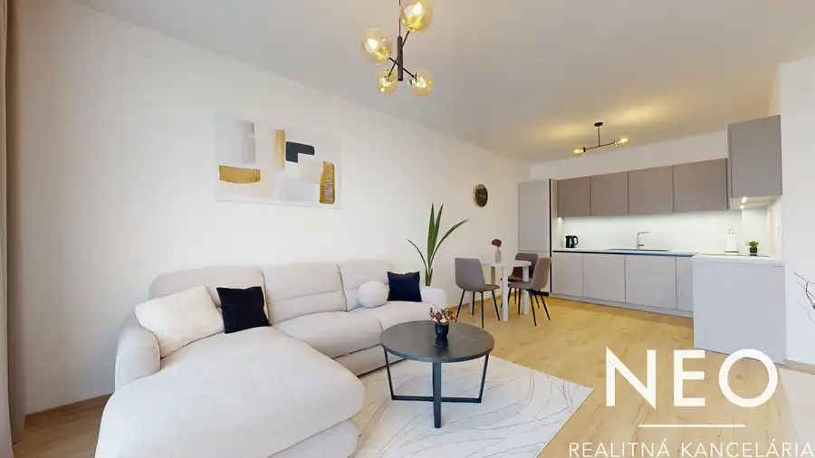
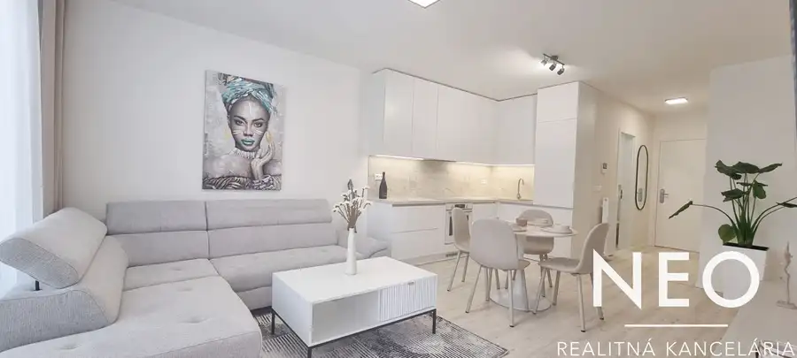
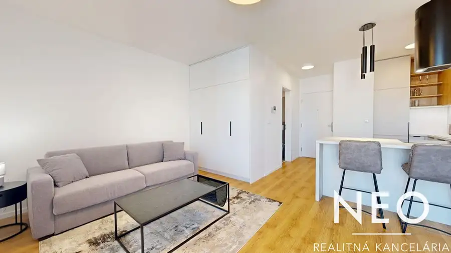

Aktuálna ponuka
8 nehnuteľností, predovšetkým byty. Každá má vlastnú stránku s fotkami, popisom a mapou.
Prezrieť ponukuDušan SivákRealitný maklér
Realitný maklér · NEOREAL ,s.r.o.
Predaj a prenájom nehnuteľností · Trnava




Byt10 389 000 €NEO - Moderný 4i mezonet v centre mesta Trnava 4-izbový130 m²3. podlažie Realitná kancelária NEOREAL Vám exkluzívne ponúka na predaj výnimočný mezonetový byt v novostavbe City Residence, situovaný priamo v historickom…
Byt9 156 216 €CUKROVAR - 1i byt v rezidenčnej štvrti ideálny na investíciu | dokončenie 1Q 2027 Trnava 1-izbový27 m²2. podlažie Projekt Cukrovar, za ktorým stojí developer UNITED Real Estate, prináša do mesta nový impulz a postupne bude meniť jeho tvár. Na mieste bývalého…
Byt10 Cena dohodouNEO - Moderný 2i byt s garážovým parkovacím miestom Trnava 2-izbový51.22 m²3. podlažie V mene realitnej kancelárie NEOREAL si Vám dovoľujeme predstaviť moderný a štýlový 2-izbový byt s výmerou 51,22 m² a balkónom o veľkosti 4,95 m²,…
Byt10 Cena dohodouNEO - 2i moderný byt s predzáhradkou Trnava 2-izbový48 m²1. podlažie Ak hľadáte na prenájom moderný byt v novostavbe v Trnave a vo výbornej lokalite, tento 2i byt v projekte Cukrovar je ako stvorený pre Vás.Realitná…
Byt10 Cena dohodouNEO - 1i v novostavbe Cukrovar s parkovacím miestom Trnava 1-izbový32 m²3. podlažie Hľadáte 1i byt na prenájom v novostavbe v Trnave a v atraktívnej lokalite? Tento 1-izbový byt v projekte Cukrovar je pre Vás ako stvorený!Realitná…Tomuto výberu zatiaľ nezodpovedá žiadna ponuka. Napíšte mi, čo hľadáte.
Volám sa Dušan Sivák. Som realitný maklér kancelárie NEOREAL ,s.r.o. a pôsobím predovšetkým v lokalitách Trnava a okolie (Trnavský kraj).
8 nehnuteľností, predovšetkým byty. Každá má vlastnú stránku s fotkami, popisom a mapou.
Prezrieť ponukuTrnava a okolie. Ponuku si môžete prezrieť podľa lokality.
Nehnuteľnosti v lokaliteOdhad trhovej ceny, príprava prezentácie, obhliadky, zmluvy a odovzdanie nehnuteľnosti.
Dohodnúť stretnutieKaždý špendlík je jedna nehnuteľnosť z mojej ponuky. Kliknite a pozrite sa.
© prispievatelia OpenStreetMap
Na čo sa pýtate najčastejšie, skôr než sa stretneme.
Odhad trhovej ceny vychádza z aktuálnych ponúk a predajov v lokalite, nie z cenníkových tabuliek. Podmienky Vám poviem pri prvom telefonáte.
Najprv obhliadka a odhad ceny, potom príprava prezentácie (fotografie, popis, inzercia), obhliadky so záujemcami, rezervačná zmluva, kúpna zmluva, návrh na vklad do katastra a odovzdanie nehnuteľnosti. O každom kroku viete vopred.
Najrýchlejšie cez WhatsApp alebo telefón. Termín stretnutia alebo obhliadky dohodneme podľa Vás.